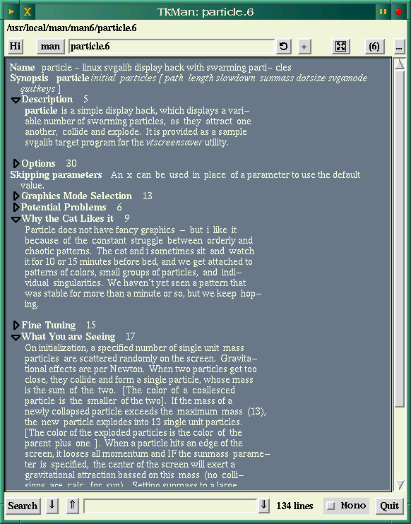

![[ TABLE OF CONTENTS ]](../gx/indexnew.gif)


The traditional form of unix documentation is the manual-page system, which uses the man command in conjunction with the Groff text formatter to display manual pages (with your default pager) on a terminal screen. This system is rather long in the tooth, but is still in widespread use because it both works well and doesn't require a windowing system. The man-page directory structure (with a directory corresponding to each directory of executables) is pretty well standardized, ensuring that when new software is installed the corresponding man-page(s) have a place waiting for them in the hierarchy.
For the past couple of years Thomas Phelps, of the University of California at Berkeley, has been writing and rewriting a Tcl/Tk based man-page reader called TkMan. As John Ousterhout has released the successive versions of Tcl and Tk TkMan has been updated to make use of the expanded capabilities of the two toolkits. Soon after the release of Tcl/Tk 8.0 this past August, TkMan 2.0 was released; it's a major release with several new features, thus this review.
TkMan is a super-charged reader which can access and search your man-pages in a variety of useful ways, and then display them in a nicely-formatted and very configurable fashion. Here is a sampling of what TkMan can do:
It is all too easy to end up with superfluous copies of man-pages on a
Linux system. If your man-pages are gzipped, an upgrade to a new version of a
program will install the new page, but the new one won't over-write the old
because the old one has the .gz suffix, and thus the filename is
different. TkMan offers a means of keeping track of duplicate man-pages; wnen
a page is displayed, the title of the page in the menu-bar will have drop-down
entries showing the paths of any other pages with the same name. Selecting
one of these will load the page, and if it's an older version or just an exact
duplicate it can be deleted. Here's a screenshot of a typical window:

This screenshot shows a man-page in its "folded" state; the right-pointing triangles are sections with hidden text. A mouse-click will expand them.
The latest version of TkMan relies on Tcl8.0 and Tk8.0, so if you want to try it out this may be a good time to upgrade. Recent versions of Tcl/Tk compile easily "out-of-the-box", so this shouldn't present too much of a problem. Unfortunately, especially if you've recently compiled and installed the 8.0 versions (and deleted the source), TkMan needs one patch to be applied to one of the Tk8.0 source files in order to function. The Tk source then needs to be recompiled. Thomas Phelps attempted to convince the Tk developers to include his patch in the distribution, but was unsuccessful. The patch adds outlining to the Tk text display functions. I've run several other applications which rely on Tk8.0 and the patch so far hasn't caused any problems.
TkMan also depends on the services provided by PolyglotMan (formerly Rman), also written by Thomas Phelps. PolyglotMan is a separate program which can reverse-compile or translate man-pages from their native Nroff or Groff format to a variety of other formats, such as HTML, SGML, LaTeX, TkMan's native format, and the Perl pod format, among others. This should be compiled and installed first, as the TkMan makefile needs to contain PolyglotMan's path.
TkMan is entirely a Tcl/Tk program, so it doesn't need to be compiled. The makefile instead rewrites several of the Tcl files, adapting them to your system's paths, before copying them to (by default) /usr/local. The makefile is well-commented and easy to adapt to your system.
The current versions of both TkMan and PolyglotMan can be downloaded from the home site.
TkMan isn't the sort of man-page reader you'd want to fire up just to check the syntax of a command, but if you're needing to refer to several man-pages in a session it can be a great convenience. A history of pages you have viewed is stored as you work, and it can be accessed from a dynamically updated drop-down menu. The overview of all man-pages in a section can be interesting, too. It's easy to forget just how many of these pages there are, and sometimes just seeing the title of a program or command in the listing can spark curiousity. It's easy to get in the habit of using just a small subset of a command's capabilities; several times I've noticed a page listed for a command I've used frequently but never thought to investigate. Even more times I've seen listings for programs I long ago deleted!
There are probably more features in TkMan than most people will ever use, but this increases the odds that the one which suits you is included. This seems to be a very high-quality program, and it will run on just about any flavor of unix out there.